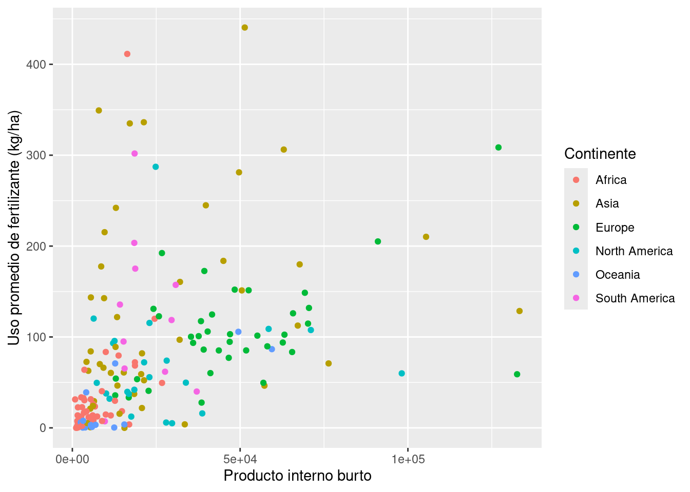
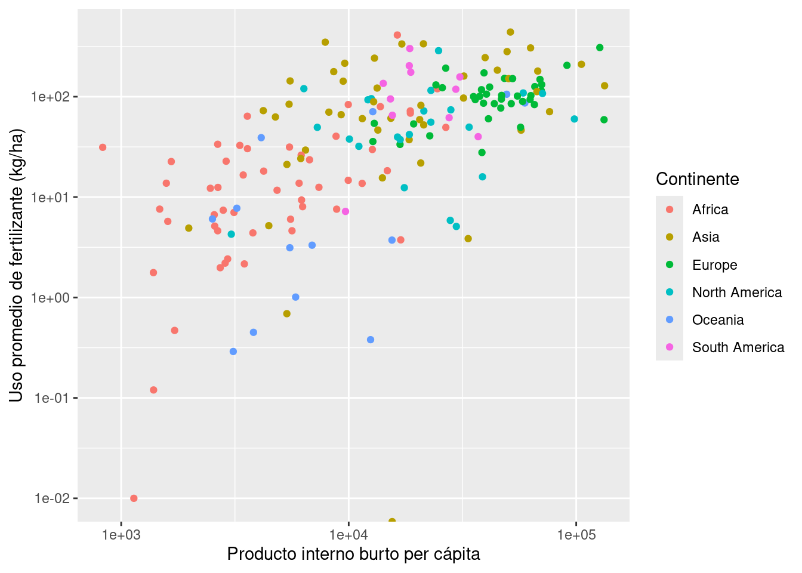
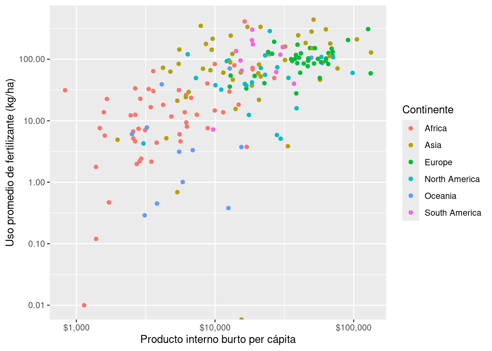
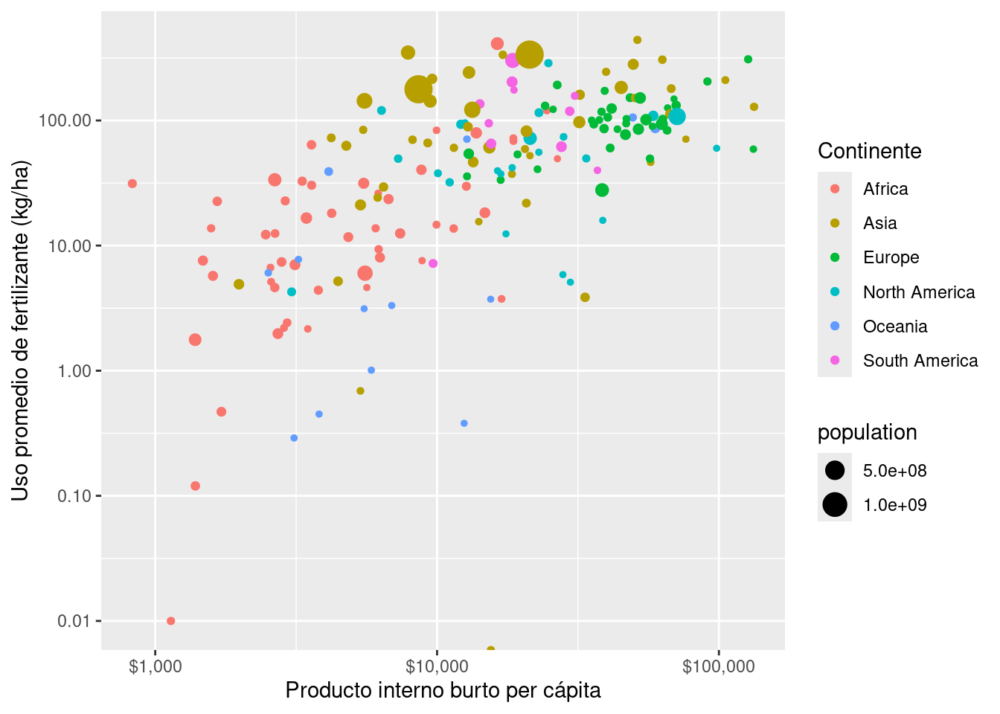
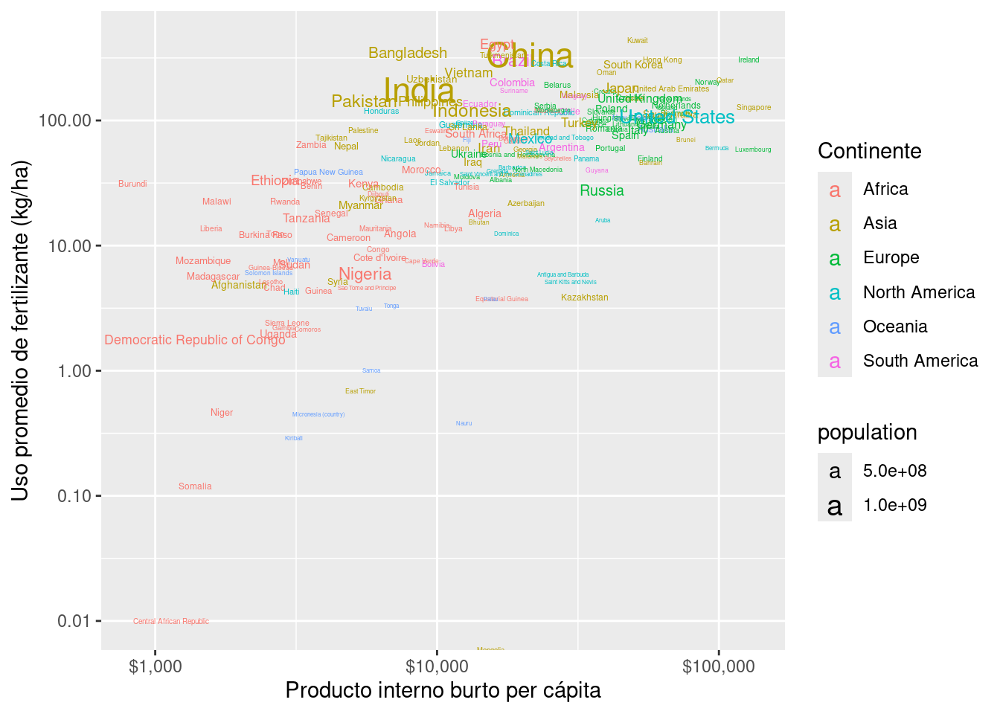
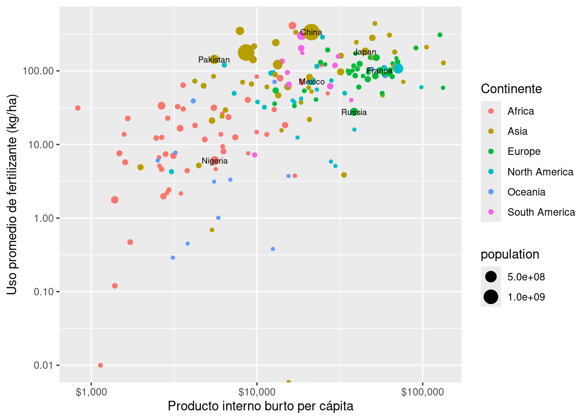
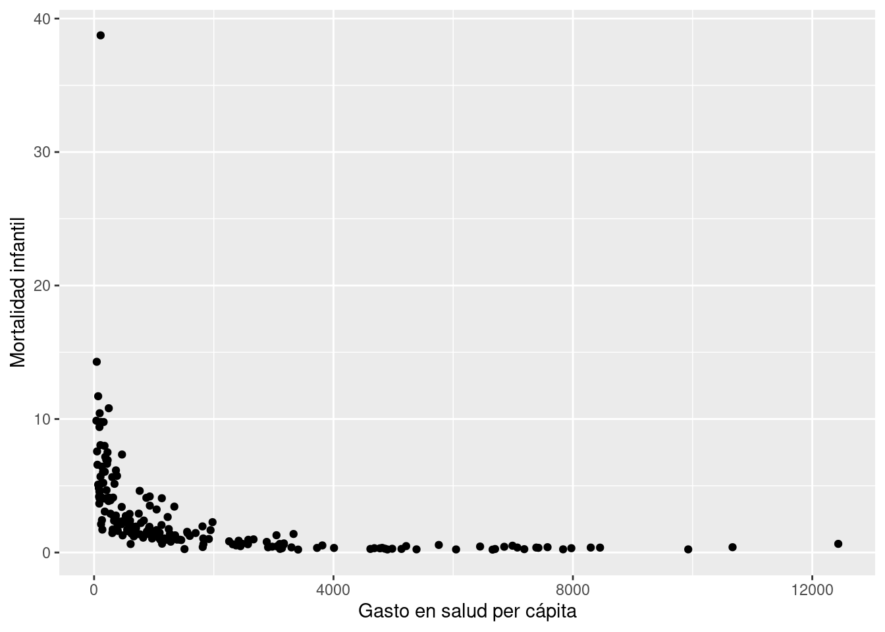
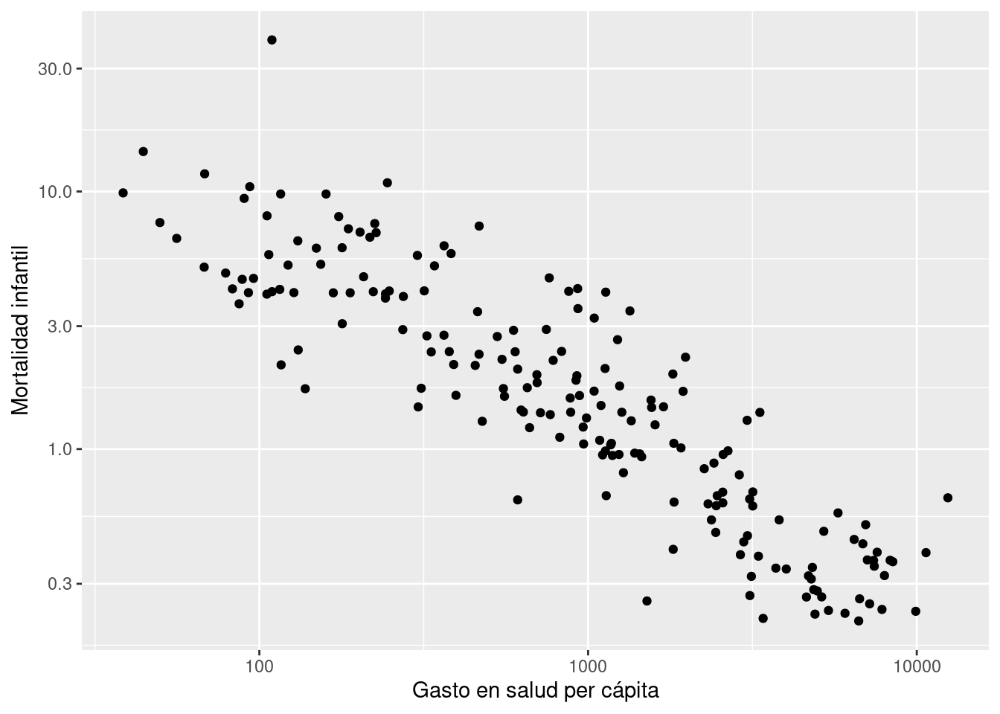
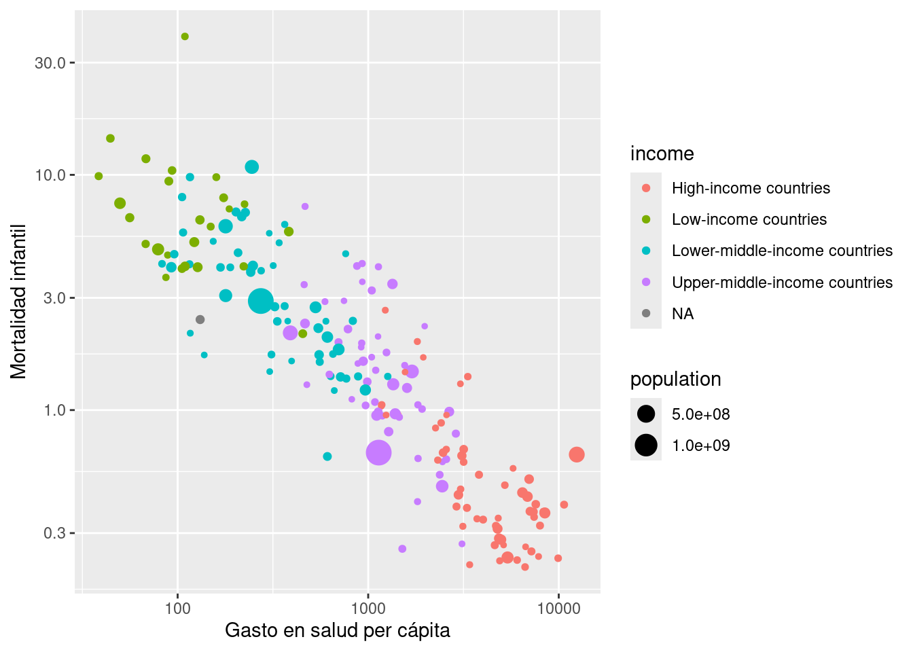
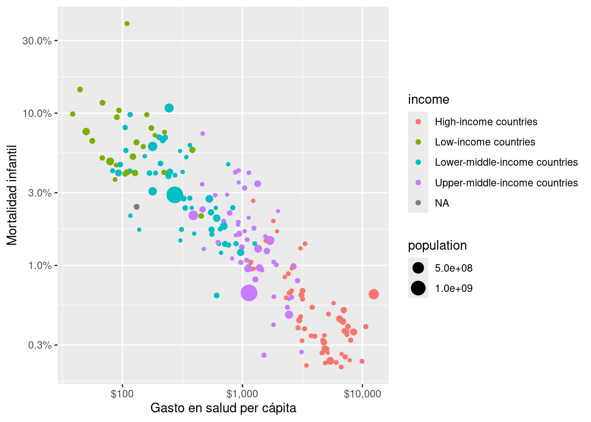

Ahora veamos algunas visualizaciones adecuadas para cuando queremos ver como varían dos variables (o más) variables cualitativas.
Objetivo
Construir gráficos de dispersión con ggplot
Construir gráficos de burbujas con ggplot
Cargar librerías y datos
En este notebook vamos a usar ggplot2 para graficar (que viene con tidyverse) y usaremos los datos con información general de los países que hemos usado en notebooks anteriores, pero ahora tenemos datos históricos desde el 1990 al 2023 y agregarmos información sobre el uso de fertilizantes per cápita.
library(tidyverse)
── Attaching core tidyverse packages ──────────────────────── tidyverse 2.0.0 ──
✔ dplyr 1.1.4 ✔ readr 2.1.5
✔ forcats 1.0.0 ✔ stringr 1.5.1
✔ ggplot2 3.5.2 ✔ tibble 3.3.0
✔ lubridate 1.9.4 ✔ tidyr 1.3.1
✔ purrr 1.1.0
── Conflicts ────────────────────────────────────────── tidyverse_conflicts() ──
✖ dplyr::filter() masks stats::filter()
✖ dplyr::lag() masks stats::lag()
ℹ Use the conflicted package (<http://conflicted.r-lib.org/>) to force all conflicts to become errors
datos <-read_csv("misc_world_data_1900_2023.csv")
Rows: 19427 Columns: 12
── Column specification ────────────────────────────────────────────────────────
Delimiter: ","
chr (4): country, code, continent, income
dbl (8): year, population, annual_co2_emissions_per_capita, average_fertiliz...
ℹ Use `spec()` to retrieve the full column specification for this data.
ℹ Specify the column types or set `show_col_types = FALSE` to quiet this message.
view(datos)
En este notebook trabajaremos solo con los datos del 2022:
datos <- datos |>filter(year ==2022)
Gráfico de disperión
Los gráficos de dispersión nos muestran los valores de dos variables numéricas usando un plano cartesiano. Para crearlo simplemente mapeamos el atributo x y y, y usamos geom_point(). Hagamos un gráfico de dispersión que nos muestre la relación entre el producto interno burto y el uso promedio de fertilizantes y mapemos al color del punto el continente al que pertenece el país:
ggplot(data = datos,mapping =aes(x = gdp_per_capita, y = average_fertilizer_per_ha, color = continent)) +geom_point() +labs(x ="Producto interno burto",y ="Uso promedio de fertilizante (kg/ha)",color ="Continente" )
Warning: Removed 31 rows containing missing values or values outside the scale range
(`geom_point()`).

Interpreta
¿Qué tendencia notas en los datos?
¿Qué problema le ves a esta gráfica?
Cambiar las escalas
Nuestra gráfica previa tiene el problema de que la mayoría de datos se aglomera en valores pequeños por lo que no es fácil ver alguna tendencia en los datos. En este casi nos funcionaría mejor una escala logarítmica, es decir, una escala que en lugar de que en los ejes demos saltos del mismo tamaño demos saltos cada vez más grandes. Para modificar las escalas en ggplot usamos las funciones scale_x_continuous() (para el eje de las x) y scale_y_continuous() (para el eje de las y). En particular debemos modificar el argumento transform = "log10" para que nos transforme la escala en logarítmica base 10 (el valor que toma por defecto es transform = "identity", lo cual representa una escala lineal):
ggplot(data = datos,mapping =aes(x = gdp_per_capita, y = average_fertilizer_per_ha, color = continent)) +geom_point() +labs(x ="Producto interno burto per cápita",y ="Uso promedio de fertilizante (kg/ha)",color ="Continente" ) +scale_x_continuous(transform ="log10") +scale_y_continuous(transform ="log10")
Warning in scale_y_continuous(transform = "log10"): log-10 transformation
introduced infinite values.
Warning: Removed 31 rows containing missing values or values outside the scale range
(`geom_point()`).

La escala logarítmica ayudan a que los datos se vean más separados y que notemos algunas tendencias. Sin embargo, nota como los números en los ejes nos los pone con notación científica difícil de interpretar.
Cambiar el formato de los números
Para cambiar el formato de los números de los ejes de manera fácil podemos usar algunas funciones que vienen en el paquete scales:
#install.packages("scales")
Para modificar los números de los ejes debemos usar el argumento labels de scale_x_continuous() y scale_y_continuous(). En particular para que en el eje de las x nos agregue un signo de pesos podemos usar la función label_dollar(), que agrega un signo de pesos y comas, y label_number(), que fuerza a no usar notación científica:
ggplot(data = datos,mapping =aes(x = gdp_per_capita, y = average_fertilizer_per_ha, color = continent)) +geom_point() +labs(x ="Producto interno burto per cápita",y ="Uso promedio de fertilizante (kg/ha)",color ="Continente" ) +scale_x_continuous(transform ="log10", labels = scales::label_dollar()) +scale_y_continuous(transform ="log10", labels = scales::label_number())
Warning: Removed 31 rows containing missing values or values outside the scale range
(`geom_point()`).

Grafico de burbujas
Un gráfico de burbujas es simplemente un gráfico de dispersión al que se le agrega una variable más en el tamaño de los marcadores. Agreguemos el tamaño de la población a nuestro gráfico:
ggplot(data = datos,mapping =aes(x = gdp_per_capita, y = average_fertilizer_per_ha, color = continent, size = population)) +geom_point() +labs(x ="Producto interno burto per cápita",y ="Uso promedio de fertilizante (kg/ha)",color ="Continente" ) +scale_x_continuous(transform ="log10", labels = scales::label_dollar()) +scale_y_continuous(transform ="log10", labels = scales::label_number())
Warning: Removed 31 rows containing missing values or values outside the scale range
(`geom_point()`).

Agregar etiquetas de texto
Algo que haría más interesante nuestro gráfico es mostrar el nombre de los países a los que corresponde cada punto. Para eso en lugar de usar geom_point() podríamos usar geom_text(). geom_text() necesita que le indiquemos que valor vamos a mapear a la etiqueta, para eso en el aes() mapeamos el país al atributo label:
Warning: Removed 31 rows containing missing values or values outside the scale range
(`geom_text()`).

Estos gráfico nos permite ver los países pero no son muy convenientes ya que son demasiados nombres y se enciman unos sobre otros. Algo más conveniente sería solo agregar las etiquetas de unos cuantos países que queramos. Para eso podemos hacer una tabla distinta con la información solo de los paises que queremos mostrar, por ejemplo:
Warning: Removed 31 rows containing missing values or values outside the scale range
(`geom_point()`).

Ejercicios
En los siguientes ejercicios vas a ir construyendo paso a paso un gráfico que muestre la relación entre gasto en salud per cápita y mortalidad infantil.
Crea un gráfico de dispersión que muestre la relación entre gasto per cápita en salud y mortalidad infantil
ggplot(data = datos,mapping =aes(x = health_spending_per_capita, y = child_mortality)) +geom_point() +labs(x ="Gasto en salud per cápita",y ="Mortalidad infantil" )
Warning: Removed 26 rows containing missing values or values outside the scale range
(`geom_point()`).

Agrega escala logarítmica a tu eje de las x y eje de las y:
ggplot(data = datos,mapping =aes(x = health_spending_per_capita, y = child_mortality)) +geom_point() +labs(x ="Gasto en salud per cápita",y ="Mortalidad infantil" ) +scale_x_continuous(transform ="log10") +scale_y_continuous(transform ="log10")
Warning: Removed 26 rows containing missing values or values outside the scale range
(`geom_point()`).

Mapea el color del marcador a la clasificación de ingreso segun el banco munidal y el tamaño a la población
ggplot(data = datos,mapping =aes(x = health_spending_per_capita, y = child_mortality, color = income, size = population)) +geom_point() +labs(x ="Gasto en salud per cápita",y ="Mortalidad infantil" ) +scale_x_continuous(transform ="log10") +scale_y_continuous(transform ="log10")
Warning: Removed 26 rows containing missing values or values outside the scale range
(`geom_point()`).

Modifica las etiquetas de los números del eje x para que tengan el signo de pesos (scales::label_dollar()) y las etiquetas del eje y para que tengan el signo de porcentaje (scales::label_percent(scale = 1))
ggplot(data = datos,mapping =aes(x = health_spending_per_capita, y = child_mortality, color = income, size = population)) +geom_point() +labs(x ="Gasto en salud per cápita",y ="Mortalidad infantil" ) +scale_x_continuous(transform ="log10", labels = scales::label_dollar()) +scale_y_continuous(transform ="log10", labels = scales::label_percent(scale =1))
Warning: Removed 26 rows containing missing values or values outside the scale range
(`geom_point()`).

Ejecutar el código
---title: "18 - Graficos de dispersión y de burbujas"output: html_documenteditor_options: chunk_output_type: console---## IntroducciónAhora veamos algunas visualizaciones adecuadas para cuando queremos ver como varían dos variables (o más) variables cualitativas.**Objetivo**- Construir gráficos de dispersión con ggplot- Construir gráficos de burbujas con ggplot## Cargar librerías y datosEn este notebook vamos a usar `ggplot2` para graficar (que viene con `tidyverse`) y usaremos los datos con información general de los países que hemos usado en notebooks anteriores, pero ahora tenemos datos históricos desde el 1990 al 2023 y agregarmos información sobre el uso de fertilizantes per cápita.```{r}library(tidyverse)datos <-read_csv("misc_world_data_1900_2023.csv")view(datos)```En este notebook trabajaremos solo con los datos del 2022:```{r}datos <- datos |>filter(year ==2022)```## Gráfico de disperiónLos gráficos de dispersión nos muestran los valores de dos variables numéricas usando un plano cartesiano. Para crearlo simplemente mapeamos el atributo `x` y `y`, y usamos `geom_point()`. Hagamos un gráfico de dispersión que nos muestre la relación entre el producto interno burto y el uso promedio de fertilizantes y mapemos al color del punto el continente al que pertenece el país:```{r}ggplot(data = datos,mapping =aes(x = gdp_per_capita, y = average_fertilizer_per_ha, color = continent)) +geom_point() +labs(x ="Producto interno burto",y ="Uso promedio de fertilizante (kg/ha)",color ="Continente" )```**Interpreta**- ¿Qué tendencia notas en los datos?- ¿Qué problema le ves a esta gráfica?## Cambiar las escalas Nuestra gráfica previa tiene el problema de que la mayoría de datos se aglomera en valores pequeños por lo que no es fácil ver alguna tendencia en los datos. En este casi nos funcionaría mejor una escala logarítmica, es decir, una escala que en lugar de que en los ejes demos saltos del mismo tamaño demos saltos cada vez más grandes. Para modificar las escalas en ggplot usamos las funciones `scale_x_continuous()` (para el eje de las x) y `scale_y_continuous()` (para el eje de las y). En particular debemos modificar el argumento `transform = "log10"` para que nos transforme la escala en logarítmica base 10 (el valor que toma por defecto es `transform = "identity"`, lo cual representa una escala lineal):```{r}ggplot(data = datos,mapping =aes(x = gdp_per_capita, y = average_fertilizer_per_ha, color = continent)) +geom_point() +labs(x ="Producto interno burto per cápita",y ="Uso promedio de fertilizante (kg/ha)",color ="Continente" ) +scale_x_continuous(transform ="log10") +scale_y_continuous(transform ="log10")```La escala logarítmica ayudan a que los datos se vean más separados y que notemos algunas tendencias. Sin embargo, nota como los números en los ejes nos los pone con notación científica difícil de interpretar.## Cambiar el formato de los númerosPara cambiar el formato de los números de los ejes de manera fácil podemos usar algunas funciones que vienen en el paquete `scales`:```{r}#install.packages("scales")```Para modificar los números de los ejes debemos usar el argumento `labels` de `scale_x_continuous()` y `scale_y_continuous()`. En particular para que en el eje de las x nos agregue un signo de pesos podemos usar la función `label_dollar()`, que agrega un signo de pesos y comas, y `label_number()`, que fuerza a no usar notación científica:```{r}ggplot(data = datos,mapping =aes(x = gdp_per_capita, y = average_fertilizer_per_ha, color = continent)) +geom_point() +labs(x ="Producto interno burto per cápita",y ="Uso promedio de fertilizante (kg/ha)",color ="Continente" ) +scale_x_continuous(transform ="log10", labels = scales::label_dollar()) +scale_y_continuous(transform ="log10", labels = scales::label_number())```## Grafico de burbujasUn gráfico de burbujas es simplemente un gráfico de dispersión al que se le agrega una variable más en el tamaño de los marcadores. Agreguemos el tamaño de la población a nuestro gráfico:```{r}ggplot(data = datos,mapping =aes(x = gdp_per_capita, y = average_fertilizer_per_ha, color = continent, size = population)) +geom_point() +labs(x ="Producto interno burto per cápita",y ="Uso promedio de fertilizante (kg/ha)",color ="Continente" ) +scale_x_continuous(transform ="log10", labels = scales::label_dollar()) +scale_y_continuous(transform ="log10", labels = scales::label_number())```## Agregar etiquetas de textoAlgo que haría más interesante nuestro gráfico es mostrar el nombre de los países a los que corresponde cada punto. Para eso en lugar de usar `geom_point()` podríamos usar `geom_text()`. `geom_text()` necesita que le indiquemos que valor vamos a mapear a la etiqueta, para eso en el `aes()` mapeamos el país al atributo `label`:```{r}ggplot(data = datos,mapping =aes(x = gdp_per_capita, y = average_fertilizer_per_ha, color = continent, size = population, label = country)) +geom_text() +labs(x ="Producto interno burto per cápita",y ="Uso promedio de fertilizante (kg/ha)",color ="Continente" ) +scale_x_continuous(transform ="log10", labels = scales::label_dollar()) +scale_y_continuous(transform ="log10", labels = scales::label_number())```También podemos usar `geom_label()` que nos agrega un fondo a cada etiqueta:```{r}ggplot(data = datos,mapping =aes(x = gdp_per_capita, y = average_fertilizer_per_ha, color = continent, size = population, label = country)) +geom_text() +labs(x ="Producto interno burto per cápita",y ="Uso promedio de fertilizante (kg/ha)",color ="Continente" ) +scale_x_continuous(transform ="log10", labels = scales::label_dollar()) +scale_y_continuous(transform ="log10", labels = scales::label_number())```Estos gráfico nos permite ver los países pero no son muy convenientes ya que son demasiados nombres y se enciman unos sobre otros. Algo más conveniente sería solo agregar las etiquetas de unos cuantos países que queramos. Para eso podemos hacer una tabla distinta con la información solo de los paises que queremos mostrar, por ejemplo:```{r}paises_etiquetas <-c("Mexico", "China", "Japan", "France", "Russia", "Nigeria", "Pakistan")datos_etiquetas <- datos |>filter(country %in% paises_etiquetas )```Luego podemos pasarle esta nueva tabla solamente a `geom_text()` para que solo agregue esas etiquetas:```{r}ggplot(data = datos,mapping =aes(x = gdp_per_capita, y = average_fertilizer_per_ha, color = continent)) +geom_point(mapping =aes(size = population)) +geom_text(data = datos_etiquetas, mapping =aes(label = country), color ="black", size =2.5) +labs(x ="Producto interno burto per cápita",y ="Uso promedio de fertilizante (kg/ha)",color ="Continente" ) +scale_x_continuous(transform ="log10", labels = scales::label_dollar()) +scale_y_continuous(transform ="log10", labels = scales::label_number())```## EjerciciosEn los siguientes ejercicios vas a ir construyendo paso a paso un gráfico que muestre la relación entre gasto en salud per cápita y mortalidad infantil.1. Crea un gráfico de dispersión que muestre la relación entre gasto per cápita en salud y mortalidad infantil```{r}ggplot(data = datos,mapping =aes(x = health_spending_per_capita, y = child_mortality)) +geom_point() +labs(x ="Gasto en salud per cápita",y ="Mortalidad infantil" )```2. Agrega escala logarítmica a tu eje de las x y eje de las y:```{r}ggplot(data = datos,mapping =aes(x = health_spending_per_capita, y = child_mortality)) +geom_point() +labs(x ="Gasto en salud per cápita",y ="Mortalidad infantil" ) +scale_x_continuous(transform ="log10") +scale_y_continuous(transform ="log10")```3. Mapea el color del marcador a la clasificación de ingreso segun el banco munidal y el tamaño a la población```{r}ggplot(data = datos,mapping =aes(x = health_spending_per_capita, y = child_mortality, color = income, size = population)) +geom_point() +labs(x ="Gasto en salud per cápita",y ="Mortalidad infantil" ) +scale_x_continuous(transform ="log10") +scale_y_continuous(transform ="log10")```4. Modifica las etiquetas de los números del eje x para que tengan el signo de pesos (`scales::label_dollar()`) y las etiquetas del eje y para que tengan el signo de porcentaje (`scales::label_percent(scale = 1)`)```{r}ggplot(data = datos,mapping =aes(x = health_spending_per_capita, y = child_mortality, color = income, size = population)) +geom_point() +labs(x ="Gasto en salud per cápita",y ="Mortalidad infantil" ) +scale_x_continuous(transform ="log10", labels = scales::label_dollar()) +scale_y_continuous(transform ="log10", labels = scales::label_percent(scale =1))```